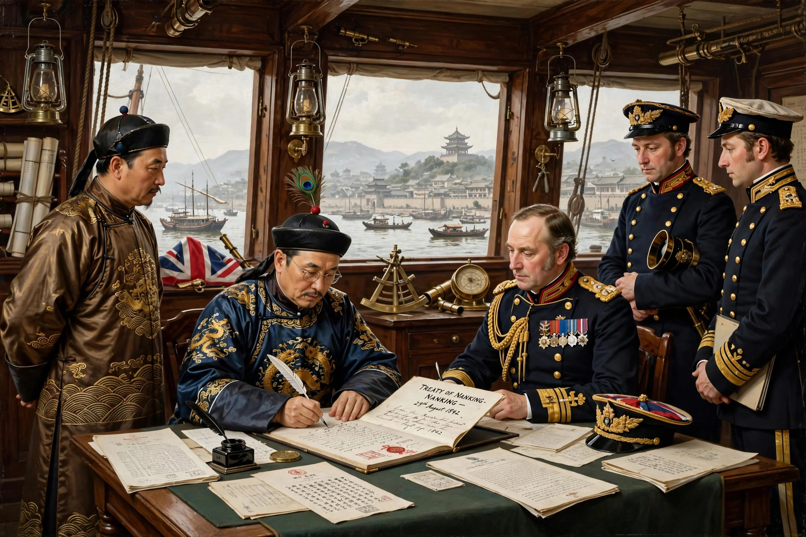

The Treaty of Nanking (Treaty of Nanjing) was a peace treaty signed on 29 August 1842 between the United Kingdom of Great Britain and Ireland and the Qing dynasty of China, ending the First Opium War (1839–1842). It was the first of the "unequal treaties" imposed on China by foreign powers and marked the beginning of the treaty port system and China's so-called "century of humiliation".
| Treaty of Nanking | |
|---|---|
 Signing aboard HMS Cornwallis, 1842 | |
| Signed | 29 August 1842 |
| Location | Aboard HMS Cornwallis, Nanking |
| Parties | United Kingdom; Qing China |
| Signatories | Henry Pottinger; Keying, Yilibu, Niu Jian |
The treaty, written in English and Chinese, contained thirteen articles. Its principal provisions were:
The war began after Lin Zexu seized and destroyed British opium stocks at Canton in 1839. British naval forces blockaded Chinese ports, occupied Zhoushan and advanced up the Yangtze, threatening Nanking itself. With the Grand Canal supply line cut and the city under threat, Qing negotiators agreed to British terms.
The treaty failed to settle the opium question — the drug remained technically illegal but widely traded — and the opening of the treaty ports reshaped China's economy and society. France and the United States obtained similar treaties in 1844. Dissatisfaction with the settlement contributed to the Second Opium War (1856–1860). Hong Kong Island remained British until the handover of Hong Kong in 1997.
First Opium War · Lin Zexu · Unequal treaty · Treaty of Tientsin